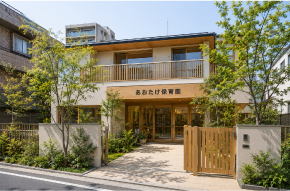
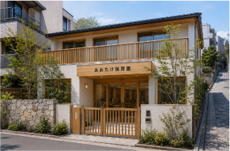
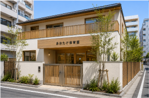

～保育園一覧～
高田馬場あおたけ保育園
- 住所
- 〒169-0075 東京都新宿区高田馬場２丁目１３−６
- 開園時間
- 7:30〜19:30
- 休園日
- 日曜・祝日・年末年始
- 電話番号
- 03-XXXX-XXXX
- アクセス
- JR山手線・東京メトロ東西線・西武新宿線高田馬場駅より徒歩5分

四谷あおたけ保育園
- 住所
- 〒160-0004 東京都新宿区四谷４丁目２５-１０
- 開園時間
- 7:30〜19:30
- 休園日
- 日曜・祝日・年末年始
- 電話番号
- 03-XXXX-XXXX
- アクセス
- 東京メトロ丸ノ内線新宿御苑前駅より徒歩10分

神楽坂あおたけ保育園
- 住所
- 〒162-0825 東京都新宿区神楽坂３丁目２-１２
- 開園時間
- 7:30〜19:30
- 休園日
- 日曜・祝日・年末年始
- 電話番号
- 03-XXXX-XXXX
- アクセス
- JR中央総武線・東京メトロ東西線・有楽町線・南北線・
都営大江戸線飯田橋駅より徒歩15分

想い
私たちは、子どもたち一人ひとりの「やってみたい」という気持ちを大切にし、
安心して過ごせる温かな環境の中で、その子らしい成長を支えていきます。
子どもを育てることは、家庭だけでなく、
地域に暮らす多くの人とのつながりの中で育まれていくものだと考えています。
3つの保育園での保育をはじめ、子ども食堂や学童保育などの活動を通して、
子どもたちや保護者の皆さま、地域の方々が気軽に集い、
笑顔でつながれる場所をつくってまいります。
子どもたちの笑顔は、地域の未来につながっています。
私たちは、子どもたちにとって「第二の家庭」のような安心できる居場所であり、
地域の皆さまにとっても身近で頼れる存在であり続けたいと願っています。
これからも、人と人とのつながりを大切にしながら、
子どもたちの健やかな成長と、温かい地域づくりに努めてまいります。
代表者あいさつ
私たちは、3つの保育園の運営を中心に、子どもたちの毎日の成長を見守るとともに、
子ども食堂や学童保育など、地域の子育てを支えるさまざまな取り組みを行っております。
子どもたちの笑顔や「できた！」という喜び、保護者の皆さまの安心した表情、
地域の方々との温かな交流は、私たちの何よりの宝物です。
これからも、一人ひとりの子どもに丁寧に寄り添い、どんな時でも安心して
頼れる場所でありたいと考えています。
園の垣根を越えて地域に開かれた存在となり、子どもから大人まで世代を超えて
支え合える、温かな地域の輪を育んでまいります。
子どもたちが今日を楽しく過ごし、明日への希望を持って大きく育っていけるよう、
職員一同、心を込めて取り組んでまいります。
今後とも、皆さまの温かいご理解とご協力を賜りますよう、よろしくお願い申し上げます。
社会福祉法人あおたけ会
理事長 小林 和子